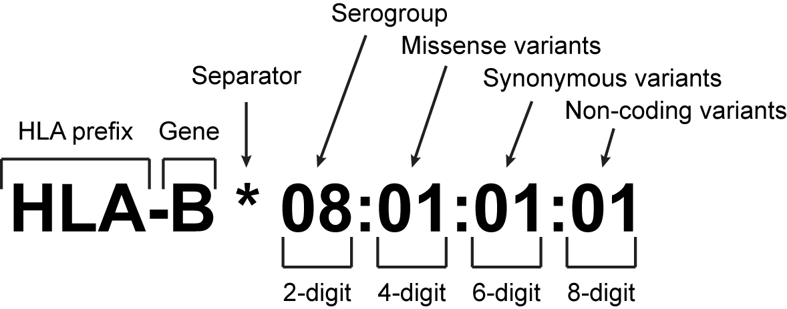
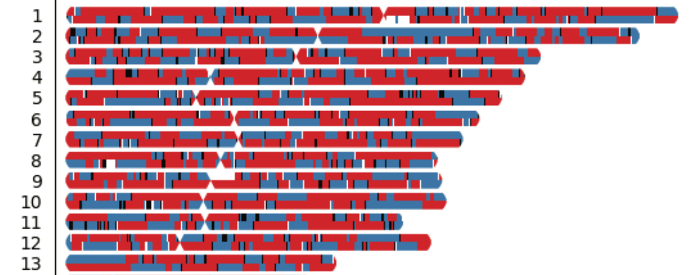
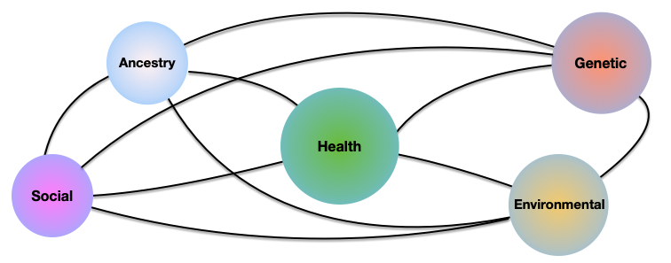
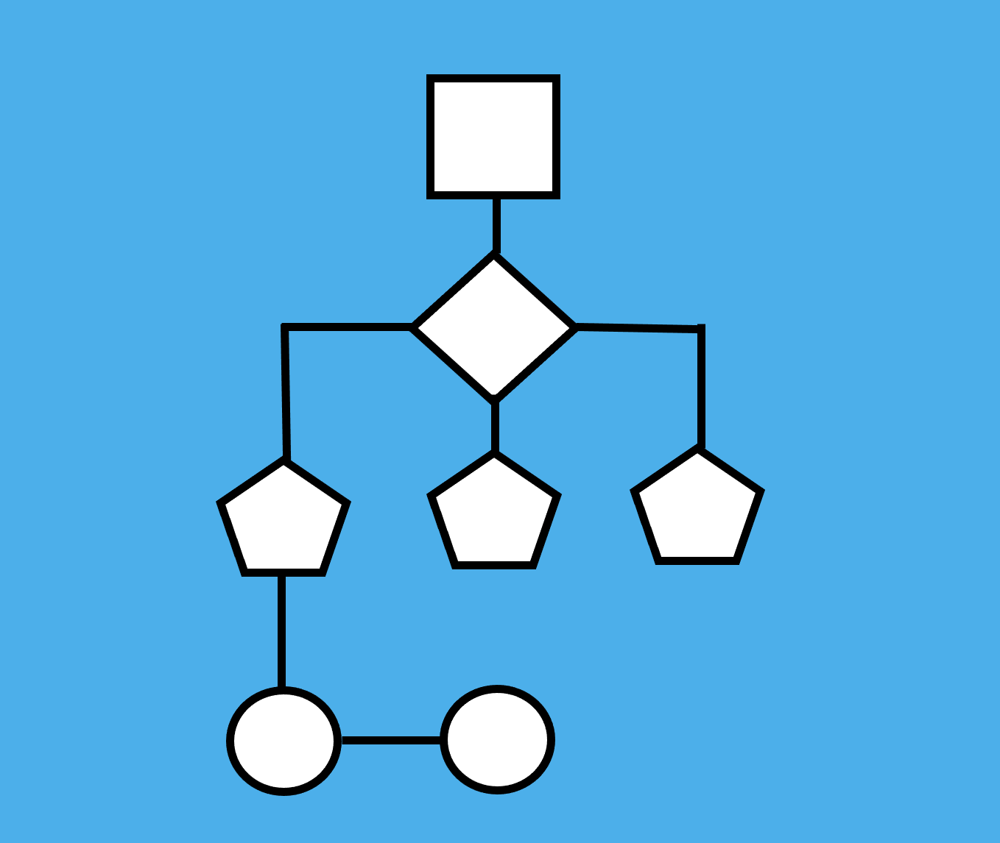
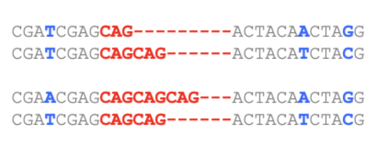

HLA ANALYSISWe are developing methods to perform HLA typing in diverse populations, and characterize their associations with complex traits and disease. |
GENOME PRIVACY
We are studying best ways to protect the privacy of individuals while allowing authorized researchers to compute with sensitive data. |
ANCESTRY-AWARE POLYGENIC RISK SCORESWe are developing models that consider each individual’s unique patchwork of ancestry to accurately predict disease risk. |
SOCIOECONOMIC DETERMINANTS OF HEALTHWe are developing methods that incorporate factors like genetics, ancestry, socioeconomic factors, and environmental factors for health evaluation in diverse populations. |
DISTRIBUTED ANALYTICSWe are developing algorithms that allows us to compute with data that are not located at a central database, but instead are distributed across different databases. |
TANDEM REPEATSCAST is leveraging methods to analyze highly polymorphic tandem repeats in diverse populations, and understand their role in medically relevant complex traits. |